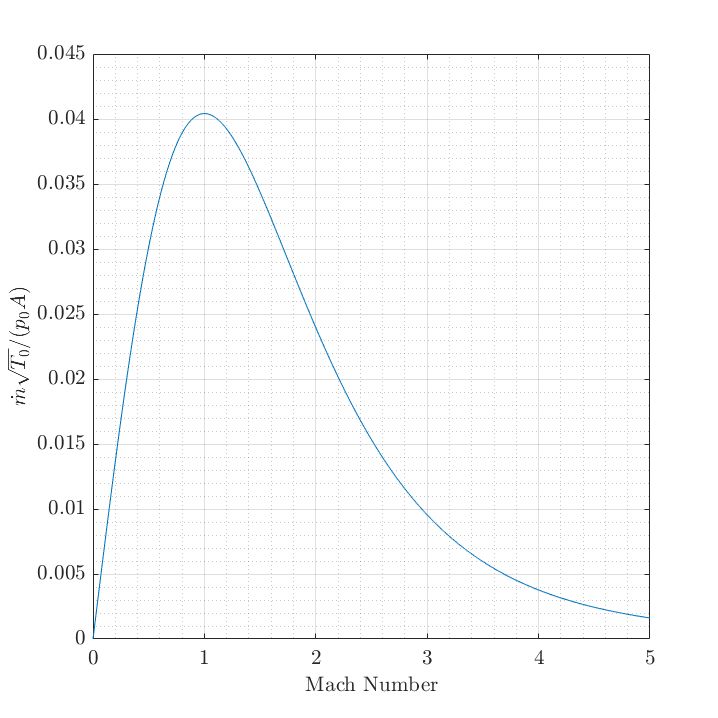

Contents
Problem 1
close all
clear;clc
disp('Problem 1')
gamma = 1.4;
R = 287;
A = pi*(0.01/2)^2;
Me = 1;
pb = 15e3;
po = pb;
Tb = 20 + 273.15;
To = Tb;
pamb = 100;
pe = po * (1+(gamma-1)/2*Me^2)^(-gamma/(gamma-1));
Te = To * (1+(gamma-1)/2*Me^2)^(-1);
ve = Me * sqrt(gamma*R*Te);
disp(['a) Pe = ' num2str(pe) ' kPa' newline ...
' Ve = ' num2str(ve) ' m/s'])
rho_e = pe/R/Te*1000;
mdot = rho_e * A * ve;
disp(['b) mdot = ' num2str(mdot) ' kg/s'])
F = mdot * ve + (pb-pe) * A * 1000;
disp(['c) F = ' num2str(F) ' N'])
Problem 1
a) Pe = 7924.2268 kPa
Ve = 313.2992 m/s
b) mdot = 2.7811 kg/s
c) F = 1427.0442 N
Problem 2
close all
clear;clc
disp('Problem 2')
gamma = 1.4;
R = 287;
M = linspace(0,5,2001);
LHS = sqrt(gamma/R).*M./((1+(gamma-1)/2.*M.^2)).^((gamma+1)/2/(gamma-1));
plot(M,LHS)
grid(gca,'minor')
grid on
xlabel('Mach Number')
ylabel('$\dot{m}\sqrt{T_0}/(p_0A)$')
latexify
LHS_max = max(LHS);
M_max = M;
M_max(LHS~=LHS_max) = [];
disp(['c) Val = ' num2str(LHS_max) newline ...
' M = ' num2str(M_max)])
Problem 2
c) Val = 0.040418
M = 1

Problem 3
close all
clear;clc
gamma = 1.4;
R = 287;
T0 = 310;
p0 = 810;
pe = 101.3;
mdot = 1;
Mt = 1;
A = ( sqrt(gamma/R).*Mt./((1+(gamma-1)/2.*Mt.^2)).^((gamma+1)/2/(gamma-1)) ...
/ mdot / sqrt(T0) * p0 * 1000) ^ (-1);
disp(['a) A_throat = ' num2str(A) ' m^2'])
syms mm positive
eqn = pe/p0 == (1+(gamma-1)/2*mm^2)^(-gamma/(gamma-1));
Me = double(solve(eqn,mm));
disp(['b) M_exit = ' num2str(Me)])
Te = T0 * (1+(gamma-1)/2*Me^2)^(-1);
ve = Me * sqrt(gamma*R*Te);
disp(['c) V_exit = ' num2str(ve) ' m/s'])
a) A_throat = 0.00053779 m^2
b) M_exit = 2.0139
c) V_exit = 528.1416 m/s
Problem 4
close all
clear;clc
gamma = 1.3;
cp = 1.2;
R = 276.923;
At = 1;
Ae = 1.5 * At;
T0 = 1670;
p0 = 3e3;
pb = 101.3;
Mt = 1;
pt = p0 * (1+(gamma-1)/2*Mt^2)^(-gamma/(gamma-1));
Tt = T0 * (1+(gamma-1)/2*Mt^2)^(-1);
vt = sqrt(gamma*R*Tt);
rho_t = pt/R/Tt * 1000;
mdot_t = rho_t * At * vt;
F_orig = mdot_t * vt + (pt-pb) * At * 1000;
options = optimoptions('fmincon','Display','off');
Me = fmincon(@(mm) abs(mdot_t/Ae/p0/1000*sqrt(T0) - sqrt(gamma/R)*mm...
/(1+(gamma-1)/2*mm^2)^((gamma+1)/2/(gamma-1))), 2, -1, -1.5, ...
[], [], [], [], [], options);
Te = T0 * (1+(gamma-1)/2*Me^2)^(-1);
ve = Me * sqrt(gamma*R*Te);
pe = p0 * (1+(gamma-1)/2*Me^2)^(-gamma/(gamma-1));
rho_e = pe/R/Te * 1000;
mdot_e = rho_e * Ae * ve;
F_cd = mdot_e * ve + (pe-pb) * Ae * 1000;
disp(['Thrust increase = ' num2str((F_cd-F_orig)/F_orig*100) '%'])
Thrust increase = 9.8967%